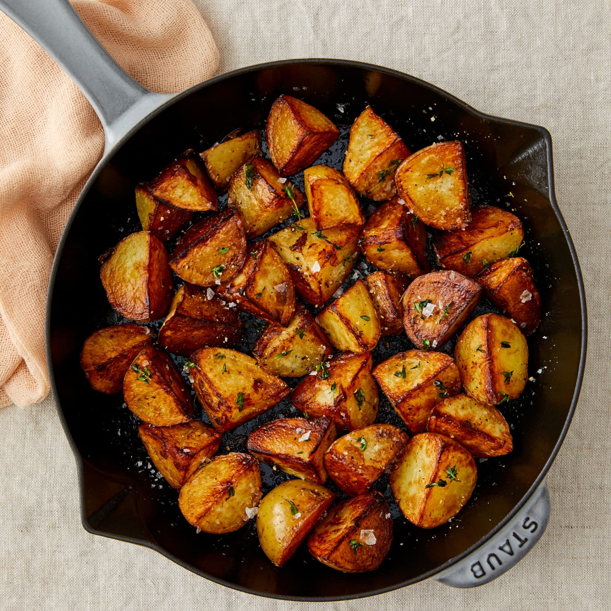

Pan-Fried Potatoes

Description
One of the most versatile side dishes you can make is pan-fried potatoes. Whether it's breakfast,
lunch, or dinner, it pairs with nearly everything, and it's so simple to make.
Ingredients
- Mini golden potatoes
- Cast iron pan
- Canola or Vegetable oil
- Salt
- Pepper
Steps
- Start by rinsing the potatoes and chopping into half-inch pieces.
- In a medium sized pot, place the potatoes in the water and bring to a strong boil.
- After reaching a boil, drop heat to a simmer and heat up the cast-iron with enough oil to coat the bottom of the pan.
- After the potatoes have simmered for 5-6 minutes, strain the water out over the sink. Make sure they are somewhat soft.
- Once potatoes are strained, fry in oil of choice until golden brown and season generously while cooking.
- Remove potatoes once they're golden brown and crispy, and enjoy!